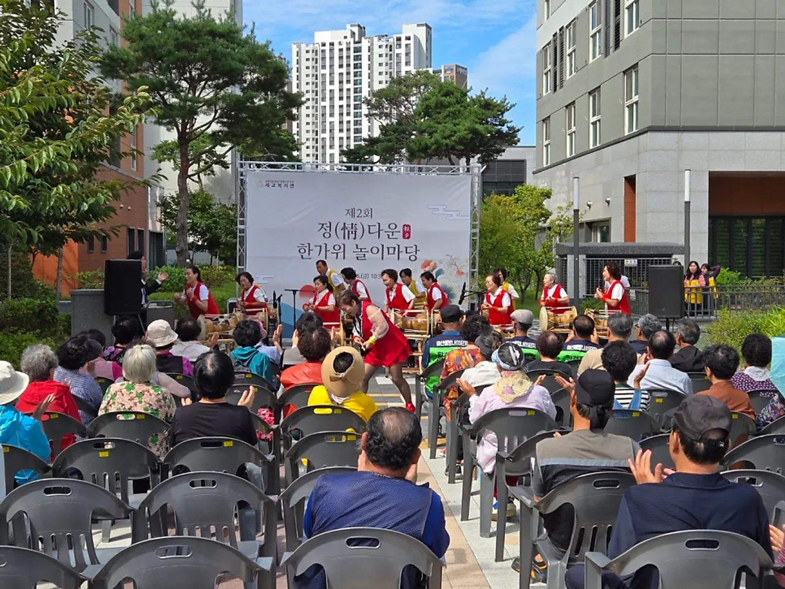
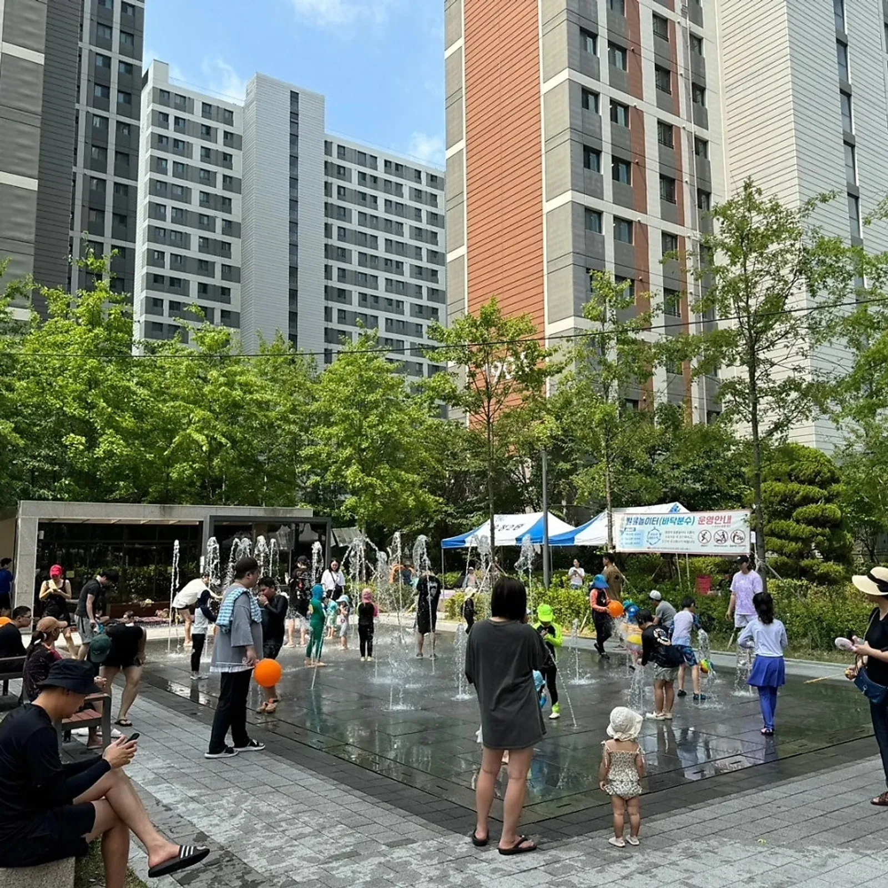

아산 행사 준비 · 2026년 10월 28일
아산 아파트 주민행사 준비 — 천막 · 무대 · 음향 순서
아산 아파트 주민행사는 장비보다 단지 안 어느 공간을 쓸지를 먼저 정하면 나머지가 쉽게 풀립니다. 광장 · 주차장 · 산책로 가운데 무대 자리와 천막 줄을 먼저 잡고, 그다음 음향과 동선을 맞추는 순서입니다. 행사ON은 아산(탕정 · 배방 · 온양 · 음봉 · 둔포 등)에 본사가 있어 아산시청까지 차로 약 10분 거리이고, 배방 LH15단지 추석 주민행사(2026)에서 음향 · 무대 · 백드롭 · 트러스 · 천막을 맡았습니다. 처음 주민행사를 준비하는 담당자가 순서대로 따라 할 수 있게 정리했습니다.

- 주민행사는 무대 자리 → 천막 줄 → 음향 → 동선 순서로 정합니다.
- 단지 안 광장 · 주차장 · 산책로는 차량 진입과 설치 가능한 시간을 먼저 확인합니다.
- 공연이 있는 행사는 객석 의자와 스피커 방향을 함께 정해야 주민 소음 민원이 줄어듭니다.
- 봄 가족축제 · 여름 물놀이 · 가을 야시장 · 겨울 송년 포토존처럼 계절별로 구성을 바꿀 수 있습니다.
- 행사ON 본사는 아산 탕정에 있어 단지 현장 확인 일정을 잡기 쉽습니다.
1. 아산 아파트 주민행사, 공간부터 고릅니다
주민행사 준비가 막히는 가장 흔한 이유는 장소가 늦게 정해지는 것입니다. 단지 안에서 쓸 수 있는 공간은 대개 광장 · 주차장 · 산책로 세 가지이고, 공간마다 할 수 있는 것이 다릅니다. 무대와 객석이 필요한 공연은 광장이, 플리마켓 · 먹거리 부스는 길게 늘어선 산책로가, 물놀이 기구는 바닥이 평평하고 물을 쓰기 좋은 곳이 맞습니다.
| 공간 | 어울리는 프로그램 | 먼저 확인할 것 |
|---|---|---|
| 광장 | 주민 공연 · 초청 공연 · 개회식 | 무대 크기, 객석 의자 수, 전기 위치 |
| 산책로 | 플리마켓 · 체험부스 · 먹거리 부스 | 천막 줄 길이, 통행로 폭 |
| 주차장 | 야시장 · 놀이존 · 물놀이 | 차량 통제 시간, 바닥 경사 |
| 커뮤니티 시설 앞 | 접수 · 운영본부 · 경품 | 실내 대피 공간, 화장실 위치 |
공간을 고를 때는 차량 진입과 설치 가능한 시간도 함께 봅니다. 무대 · 트러스 · 천막은 트럭으로 들어와야 하고, 주민 통행이 많은 시간에는 설치가 어렵습니다. 행사ON은 사전 미팅 때 공간 크기 · 전기 · 차량 진입 · 설치 가능한 시간을 확인한 뒤 구성을 제안합니다.
2. 천막 줄과 무대 방향을 함께 정합니다
배방 LH15단지 추석 주민행사에서는 단지 안 광장과 산책로에 무대를 만들고 천막을 세웠습니다. 매일 오가던 길이 그대로 부스 거리가 되고, 광장은 공연장이 됐습니다. 이렇게 하려면 무대가 어느 쪽을 보게 할지와 천막 줄이 어디서 끝나는지를 같은 도면에 그려야 합니다.

- 무대는 동 건물을 등지게 두고, 스피커가 세대 창을 정면으로 보지 않게 합니다.
- 천막 줄은 통행로를 막지 않게 한쪽으로 붙이고, 끝에 운영본부 천막을 둡니다.
- 어르신 객석은 그늘 쪽, 어린이 체험부스는 무대에서 조금 떨어진 곳에 둡니다.
- 전기는 관리사무소와 함께 위치를 확인하고, 케이블이 지나가는 길에는 덮개를 씁니다.
3. 공연이 있으면 음향을 따로 챙깁니다
주민행사에는 복지관 프로그램 발표나 어르신 댄스 · 장구 공연, 초청가수 무대처럼 공연이 자주 들어갑니다. 공연이 끊기지 않으려면 마이크와 음원을 미리 정리하고, 순서마다 무엇을 쓰는지 큐시트에 적어 둡니다. 행사ON은 음향을 설치한 뒤 행사 내내 현장에서 운영합니다.
| 순서 | 음향에서 필요한 것 |
|---|---|
| 개회 · 인사말 | 무선마이크 1~2개, 연단 위치 |
| 주민 공연 | 반주 음원 순서표, 공연팀별 마이크 수 |
| 초청 공연 | 공연팀과 미리 맞춘 음원 · 마이크 구성 |
| 경품 · 마무리 | 진행 마이크, 배경 음악 |
4. 계절에 따라 구성을 바꿉니다
주민행사는 한 번으로 끝나기보다 계절마다 이어질 때 반응이 좋습니다. 행사ON이 아파트 행사에서 제안하는 계절별 구성은 아래와 같습니다.
| 계절 | 행사 | 주요 구성 |
|---|---|---|
| 봄 | 어린이날 가족축제 | 에어바운스 · 놀이존 · 포토존 |
| 여름 | 물놀이장 | 에어풀장 · 워터슬라이드 · 먹거리 부스 |
| 가을 | 야시장 · 주민공연 | 플리마켓 · 먹거리 · 무대 · 음향 |
| 겨울 | 크리스마스 · 송년행사 | 포토존 · 트러스 · 조명 |

5. 아산 아파트 주민행사 견적 항목표
주민행사 견적에 자주 들어가는 항목입니다. 자동 견적서에서 품목을 골라 문의하시면 단지 구조와 프로그램에 맞춰 구성과 견적을 정리해 드립니다. 금액은 규모 · 장소 · 일정에 따라 달라 상담 후 안내합니다. 품목 구성은 가격표에서 먼저 보실 수 있습니다.
| 항목 | 확인할 것 |
|---|---|
| 입주민축제 | 프로그램 순서, 공연팀 수 |
| 캐노피 천막 | 동 수, 부스 · 운영본부 · 대기 용도 |
| 행사용 테이블 · 의자 | 부스용 · 객석용 수량 |
| 음향 시스템 | 공연 여부, 마이크 수 |
| 트러스 · 무대 | 백드롭 크기, 무대 위치 |
| 플리마켓 · 야시장 | 셀러 수, 저녁 조명 여부 |
아산 지역 안내는 아산 행사 안내에, 배방 LH15단지 현장 기록은 행사 이야기에 있습니다. 같은 아산에서 열린 야외 축제 음향은 아산 축제 음향 렌탈 글에 정리했습니다.
자주 묻는 질문
천막 · 테이블 · 의자만 빌릴 수도 있나요?
장비 한 가지 렌탈부터 행사 전체 기획 · 운영까지 고르실 수 있습니다. 부스 수와 용도를 알려 주시면 수량과 배치를 함께 정합니다.
설치는 언제 하나요?
천막 · 무대 · 음향은 보통 행사 당일 시작 전에 설치를 마칩니다. 물놀이 기구는 물 받는 시간 때문에 행사 전날 설치가 원칙입니다.
관리사무소가 미리 정할 것은 무엇인가요?
쓸 공간, 차량 진입 시간, 전기 위치, 주민 안내문 일정입니다. 사전 미팅 때 함께 확인합니다.
상담은 언제 할 수 있나요?
대표전화 1800-7947로 24시간 상담합니다. 문자는 010-9441-5542로 보내셔도 됩니다.
행사 날짜가 정해지셨나요?
날짜 · 장소 · 인원만 알려 주시면 구성과 견적을 정리해 드립니다. 상담은 24시간 받습니다.